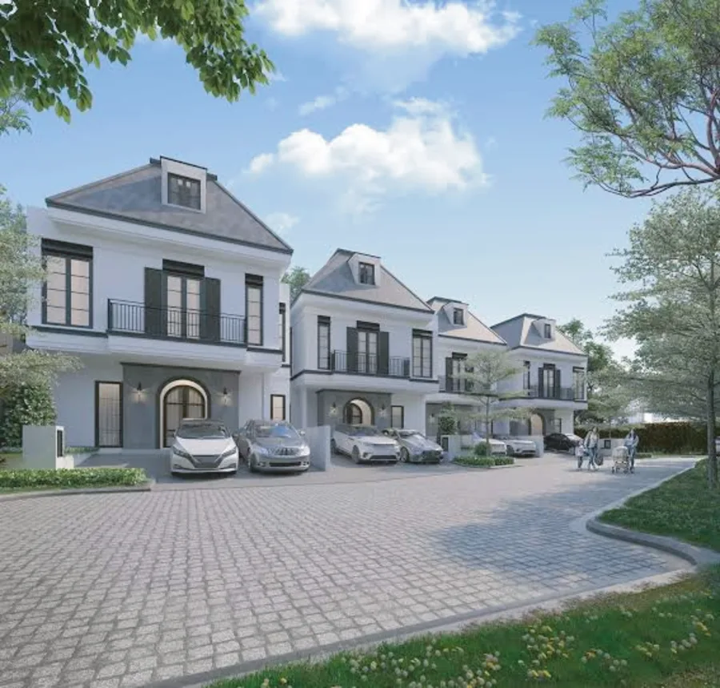
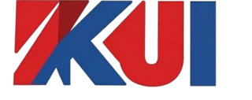
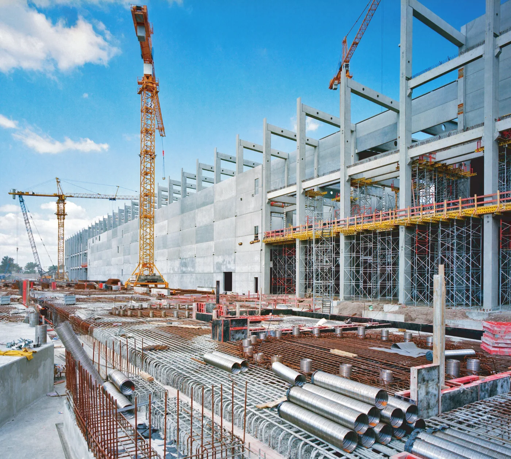
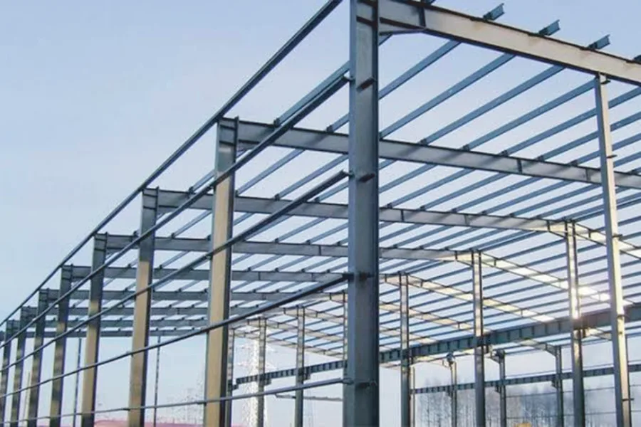
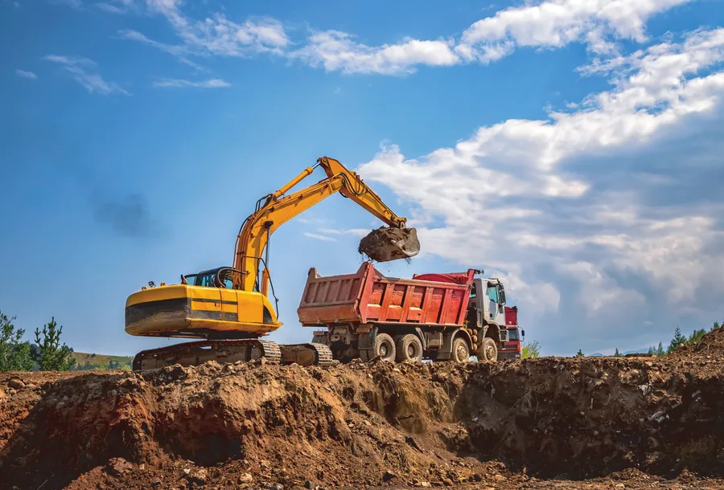
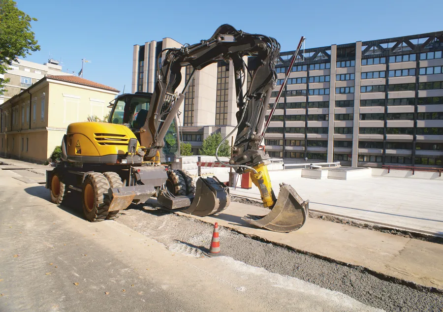
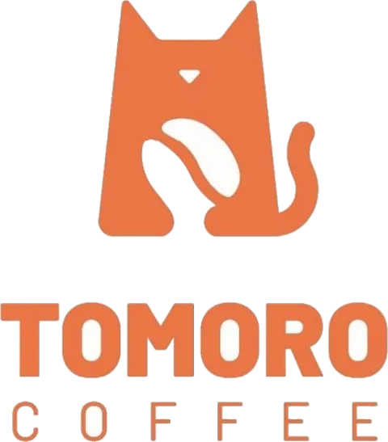
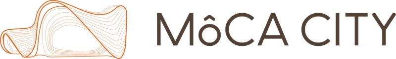

Civil Works
Layanan konstruksi sipil: pembangunan pondasi, struktur beton, saluran drainase, dinding penahan, dan pekerjaan jalan dengan standar kualitas tinggi serta efisiensi kerja optimal.


Hubungi KamiKontraktor Surabaya · Konstruksi Nasional · Est. 2022
PT Konstruksi Utama Indonesia (KUI) adalah perusahaan konstruksi nasional yang berkomitmen menghadirkan solusi pembangunan yang inovatif, tepat waktu, dan berkualitas tinggi. Dengan pengalaman dan keahlian di berbagai sektor — mulai dari infrastruktur, gedung perkantoran, hingga kawasan industri — KUI hadir sebagai mitra terpercaya dalam mewujudkan proyek-proyek strategis di seluruh Indonesia.
Berdiri dengan semangat profesionalisme dan komitmen tinggi terhadap mutu, KUI hadir sebagai mitra strategis dalam setiap proyek pembangunan — baik sektor swasta maupun pemerintah.
Sebagai kontraktor nasional tepercaya, PT. Konstruksi Utama Indonesia telah sukses menjadi mitra pembangunan utama untuk berbagai brand komersial ternama seperti Tomoro Coffee dan developer perumahan prestisius seperti MoCA City, Mansion Nine, Dian Istana, dan SWP Residence.
Dengan mengedepankan efisiensi, ketepatan waktu, dan kualitas hasil, kami memastikan setiap proyek berjalan sesuai standar dan memberikan nilai lebih bagi klien.
Didukung tenaga ahli berpengalaman, sistem manajemen proyek yang terstruktur, serta pemanfaatan teknologi konstruksi terkini, KUI terus berkembang dan berinovasi menjawab tantangan dunia konstruksi yang dinamis.
Kami percaya keberhasilan proyek bukan hanya soal hasil akhir, tetapi juga proses kerja yang transparan, kolaboratif, dan berkelanjutan. Bersama KUI, mari bangun masa depan yang lebih kokoh dan berdaya saing.

Menjadi perusahaan kontraktor terpercaya dan inovatif dalam pembangunan perumahan serta infrastruktur — dengan kualitas tinggi, tepat waktu, dan berkelanjutan.
Layanan konstruksi sipil: pembangunan pondasi, struktur beton, saluran drainase, dinding penahan, dan pekerjaan jalan dengan standar kualitas tinggi serta efisiensi kerja optimal.

Pabrikasi dan instalasi struktur baja untuk bangunan industri, gudang, jembatan, dan fasilitas komersial dengan presisi, kekuatan, dan ketahanan jangka panjang.

Pekerjaan pemotongan dan pengurukan tanah untuk meratakan kontur lahan — menciptakan fondasi yang stabil dan siap bangun sesuai kebutuhan proyek.

Pembangunan fasilitas umum seperti jalan, jembatan, saluran air, dan utilitas lainnya guna menunjang mobilitas, distribusi, serta pengembangan wilayah secara berkelanjutan.

Didukung tenaga ahli berpengalaman dan sistem manajemen proyek yang terstruktur untuk memastikan setiap pekerjaan berjalan sesuai standar.
Mengedepankan efisiensi dan ketepatan waktu, kami menyelesaikan proyek sesuai jadwal dan anggaran yang disepakati.
Pemanfaatan teknologi modern dalam setiap tahapan konstruksi untuk meningkatkan kualitas, presisi, dan daya saing hasil pekerjaan.
Proses kerja yang transparan dan kolaboratif dengan mengutamakan keselamatan kerja (K3) serta prinsip pembangunan yang ramah lingkungan.

Surabaya, Jawa Timur
PT. Konstruksi Utama Indonesia dipercaya sebagai kontraktor utama dalam pembangunan dan interior fitting-out outlet-outlet Tomoro Coffee di area Surabaya. Pekerjaan mencakup struktur sipil, instalasi baja, kelistrikan (MEP), dan finishing berkualitas tinggi.

Surabaya, Jawa Timur
Sebagai kontraktor terpilih untuk proyek kawasan hunian modern MoCA City, PT. Konstruksi Utama Indonesia melaksanakan pekerjaan cut and fill (perataan lahan), pembangunan infrastruktur jalan, drainase utama, serta konstruksi fisik unit perumahan.
Surabaya Barat, Jawa Timur
Kemitraan strategis dengan Mansion Nine dalam pembangunan infrastruktur kluster perumahan eksklusif, mencakup pekerjaan sipil struktural, dinding penahan tanah (retaining wall), dan pengerjaan saluran air makro.
Surabaya, Jawa Timur
PT. Konstruksi Utama Indonesia bertindak sebagai kontraktor sipil untuk pengerjaan jalan lingkungan, paving block berkualitas tinggi, dan perbaikan infrastruktur drainase di kawasan perumahan elit Dian Istana Surabaya.
Gresik, Jawa Timur
Pengerjaan cut & fill skala besar, persiapan lahan kavling, serta pembangunan fasilitas publik untuk pengembangan perumahan SWP Residence oleh PT. Konstruksi Utama Indonesia sebagai kontraktor infrastruktur tepercaya.
KUI menyediakan empat bidang usaha utama: pekerjaan sipil (civil works), konstruksi baja, cut & fill, dan infrastruktur — untuk proyek swasta maupun pemerintah di seluruh Indonesia.
Kantor pusat kami berada di Crystal Golf MP1/14, CitraLand Surabaya, Jawa Timur. Sebagai kontraktor Surabaya, KUI melayani proyek di seluruh wilayah Indonesia.
Hubungi kami melalui telepon/WhatsApp di +62 812-8885-8557 atau email konstruksiutamaindonesia@gmail.com. Tim kami siap membantu kebutuhan proyek Anda.
Ya. Sebagai kontraktor nasional, KUI mengerjakan proyek konstruksi dan infrastruktur strategis di berbagai kota di seluruh Indonesia.
Ya, PT. Konstruksi Utama Indonesia berpengalaman luas sebagai kontraktor utama untuk outlet komersial berskala nasional seperti Tomoro Coffee, serta pengerjaan sipil, cut and fill, dan infrastruktur untuk kawasan hunian modern seperti MoCA City, Mansion Nine, Dian Istana, dan SWP Residence.
Mari Berkolaborasi
Crystal Golf MP1/14, CitraLand Surabaya
Ruko Grand Harvest FB03, Surabaya